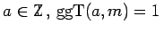

Inhalt Index DeskTop Bronstein

 Algebra und Diskrete Mathematik Elementare Zahlentheorie Kongruenzen und Restklassen Quadratische Kongruenzen
Algebra und Diskrete Mathematik Elementare Zahlentheorie Kongruenzen und Restklassen Quadratische Kongruenzen


Man kann alle Kongruenzen lösen, wenn man alle Kongruenzen lösen kann:
| (5.277) |
Man betrachtet zunächst quadratische Reste modulo m: Sei und . Die Zahl a heißt quadratischer Rest modulo m, wenn es ein mit  gibt.
gibt.
Ist die kanonische Primfaktorenzerlegung von m gegeben, d.h.
| (5.278) |
so ist r genau dann quadratischer Rest modulo m, wenn r quadratischer Rest modulo für ist.
Ist a quadratischer Rest modulo einer Primzahl p, dann schreibt man dafür auch kurz Ist a nicht quadratischer Rest modulo p, dann schreibt man (LEGENDRE-Symbol).
| Beispiel |
|
Die Zahlen 1, 4, 7 sind quadratische Reste modulo 9. |